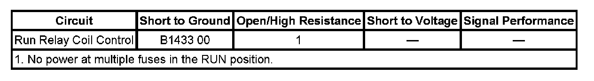

B1433
DTC B1433
DIAGNOSTIC INSTRUCTIONS
- Perform the Diagnostic System Check - Vehicle prior to using this diagnostic procedure. Initial Inspection and Diagnostic Overview
- Review Strategy Based Diagnosis for an overview of the diagnostic approach.
- Diagnostic Procedure Instructions provides an overview of each diagnostic category.
DTC DESCRIPTOR
DTC B1433 00: Ignition Switched Power Relay 2 Circuit

DIAGNOSTIC FAULT INFORMATION
CIRCUIT/SYSTEM DESCRIPTION
The body control module (BCM) controls the R3 RUN relay through the run relay coil control circuit by applying voltage to the coil side of the relay. The R3 RUN relay is energized when any of the following conditions are true:
- Ignition Switch is in ACC or RUN.
- The vehicle was remote started.
- The vehicle is in Accessory Delay Module (RAP) mode.
CONDITIONS FOR RUNNING THE DTC
- The system voltage is between 9-16 volts.
- The DTC can only set when the output is actively being requested by the module.
CONDITIONS FOR SETTING THE DTC
The DTC will set only when the module requests the output and there is a short to ground in the run relay coil control circuit.
ACTION TAKEN WHEN THE DTC SETS
The module output driver will be shut down and not supply voltage to the circuit.
CONDITIONS FOR CLEARING THE DTC
- The current DTC will clear when the module request for the output is removed or the malfunction is no longer present.
- A history DTC clears when the module ignition cycle counter reaches the reset threshold of 50, without a repeat of the malfunction.
DIAGNOSTIC AIDS
1. A short to voltage may cause some accessories to operate with the ignition key out and cause a low battery after extended non vehicle use.
2. Use the DMM MIN/MAX function to capture/locate intermittent conditions.
CIRCUIT/SYSTEM TESTING
1. With the ignition OFF, disconnect the R3 RUN relay and connect a test lamp between the run relay coil control circuit and battery positive voltage. The test lamp should not illuminate
- If the test lamp illuminates, test for a short to ground on the run relay coil control circuit. If the circuit tests normal and the DTC is current, replace the BCM.
2. If the circuit tests normal and the DTC is current, test or replace the R3 RUN relay or BCM.
COMPONENT TESTING
RAP RELAY TEST
1. Ignition OFF, disconnect the R3 RUN relay.
2. Test for 70-110 ohms of resistance between terminals 85 and 86.
- If the resistance is not within the specified range, replace the relay.
3. Test for infinite resistance between the following terminals:
- 30 and 86
- 30 and 87
- 30 and 85
- 85 and 87
- If less than infinite, replace the relay.
4. Install a 20-amp fused jumper wire between relay terminal 85 and 12 volts. Install a jumper wire between relay terminal 86 and ground. Test for less than 5 ohms of resistance between terminals 30 and 87.
- If greater than 5 ohms, replace the relay.
REPAIR INSTRUCTIONS
Perform the Diagnostic Repair Verification after completing the diagnostic procedure. Verification Tests
Control Module References for BCM replacement, setup, and programming. Programming and Relearning